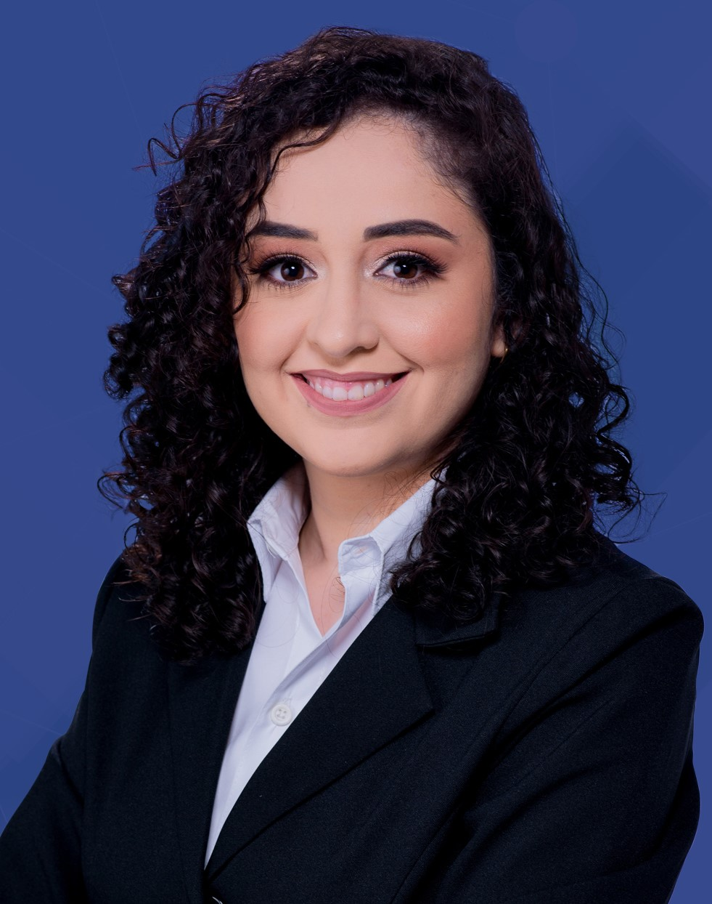

Reilta Christine Dantas Maia

Formação acadêmica
Ensino Superior
Universidade Federal do Rio Grande do Norte (UFRN)
Bacharelado em Engenharia de Computação | 2020.2 - atualmente |
Universidade Federal do Rio Grande do Norte (UFRN)
Bacharelado em Ciências e Tecnologia - Ênfase em Tecnologia de Computação | 2017.2 - 2020.1 |
Ensino Médio
Instituto Federal do Rio Grande do Norte (IFRN)
Técnico Integrado em Informática | 2013 - 2016 |